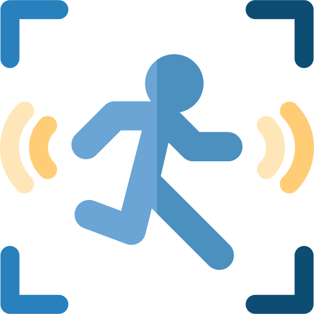
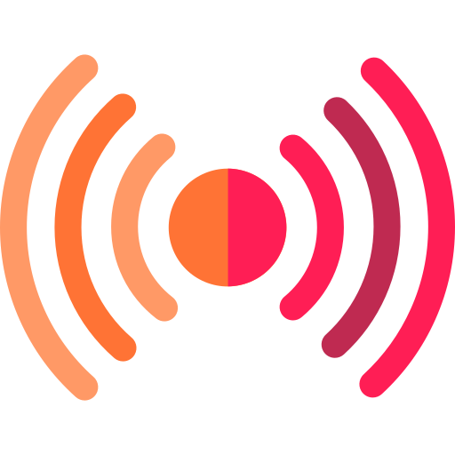

Info
Connect
Sobre
Serviços
Suporte
Simulador
Visão
Geral
Panorama geral do fluxo de aproximação no supermercado
Setor
Todos
Alimentos
Bebidas
Congelados
Limpeza
Higiene
Período
01/09/2026 - 30/09/2026
Atualizar

7.146
Total de Aproximações
65,5 s
Tempo Médio de Permanência
3.250
Permanência Prolongada

20
Sensores Ativos
Aproximações por horário
Histórico de aproximações
Tempo de permanência por faixa
Top 5 setores com mais aproximações
Dados de exemplo para visualização da dashboard.